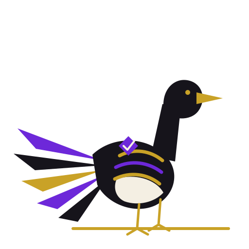
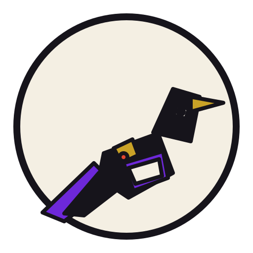
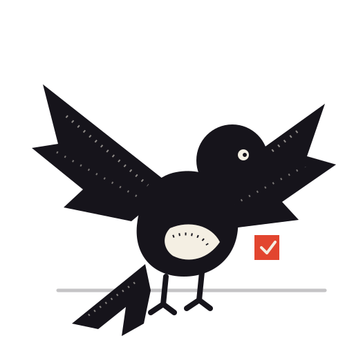
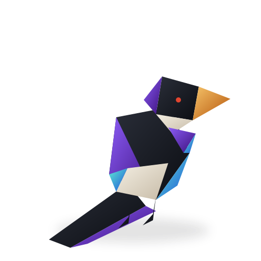
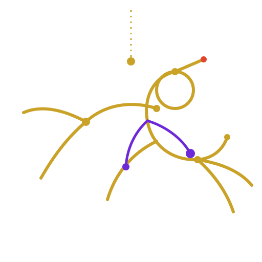

01 · ART DECO
1920s / 2026
Elongated deco bird
Long neck, fan tail, gold linework, no round body, no scarf. A brand bird, not a plush toy.

44
24
Reads as: premium, editorial. Risk: decorative.
Same character, five different art movements — not five materials on the same drawing. Each one changes silhouette, pose, anatomy, color and craft. If one works, I refine only that one; if none works, the problem is not the drawing.
Long neck, fan tail, gold linework, no round body, no scarf. A brand bird, not a plush toy.

Lead lines, glass shards, violet/amber/cream. No soft gradients; the bird is built from pieces.

Jagged wings, carved hatch lines, black/cream/vermilion. Dynamic, anti-cute, poster-like.

Faceted planes, violet/teal/charcoal, no cartoon eyes. A sculptural object.

Brass rods, violet joints, no solid body. A kinetic sculpture suspended in the UI.
